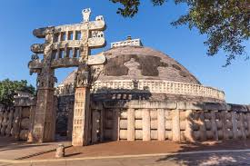

Sanchi is a Buddhist complex, famous for its Great Stupa, on a hilltop at Sanchi Town in Raisen District of
the State of Madhya Pradesh, India. It is located, about 23 kilometres from Raisen town, district
headquarter and 46 kilometres (29 mi) north-east of Bhopal, capital of Madhya Pradesh.
The Great Stupa at Sanchi is one of the oldest stone structures in India, and an important monument of Indian
Architecture. It was originally commissioned by the Mauryan emperor Ashoka the Great in the 3rd century BCE.
Its nucleus was a simple hemispherical brick structure built over the relics of the Buddha. It was crowned by
the 'chhatra', a parasol-like structure symbolising high rank, which was intended to honour and shelter the
relics. The original construction work of this stupa was overseen by Ashoka, whose wife Devi was the daughter of
a merchant of nearby Vidisha. Sanchi was also her birthplace as well as the venue of her and Ashoka's wedding.
In the 1st century BCE, four elaborately carved toranas (ornamental gateways) and a balustrade encircling the
entire structure were added. The Sanchi Stupa built during Mauryan period was made of bricks. The composite
flourished until the 11th century.
Sanchi is the center of a region with a number of stupas, all within a few miles of Sanchi, including Satdhara
(9 km to the W of Sanchi, 40 stupas, the Relics of Sariputra and Mahamoggallana, now enshrined in the new
Vihara, were unearthed there), Bhojpur (also called Morel Khurd, a fortified hilltop with 60 stupas) and Andher
(respectively 11 km and 17 km SE of Sanchi), as well as Sonari (10 km SW of Sanchi).[2][3] Further south, about
100 km away, is Saru Maru. Bharhut is 300 km to the northeast.
Sanchi Stupa is depicted on the reverse side of the Indian currency note of ₹200 to signify its importance to
Indian cultural heritage.